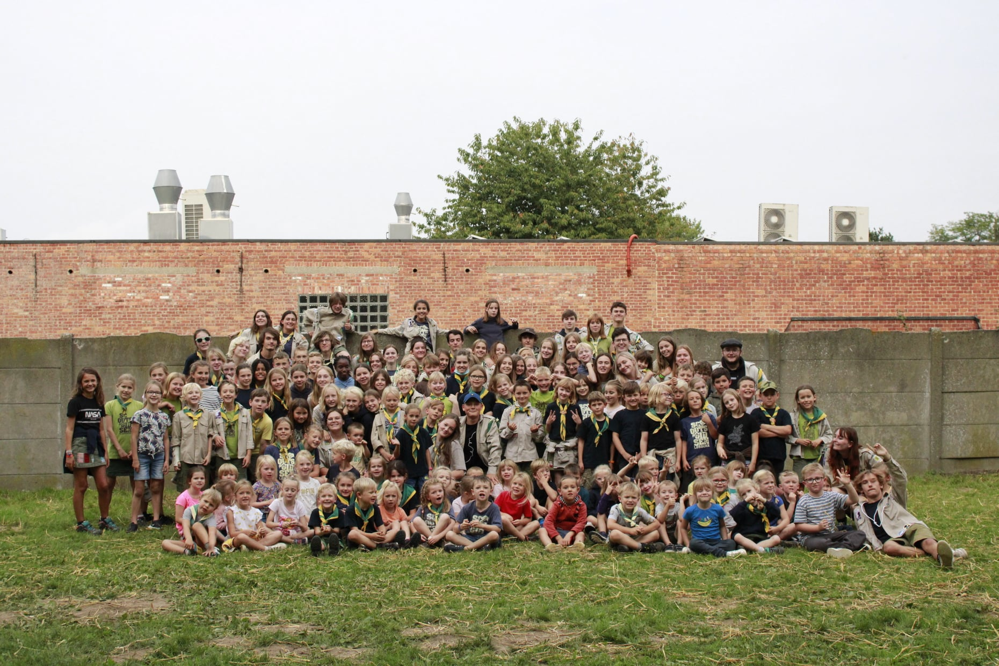
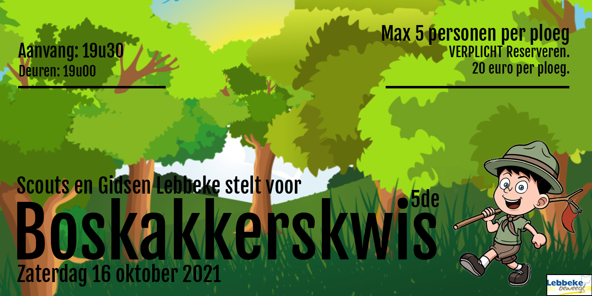
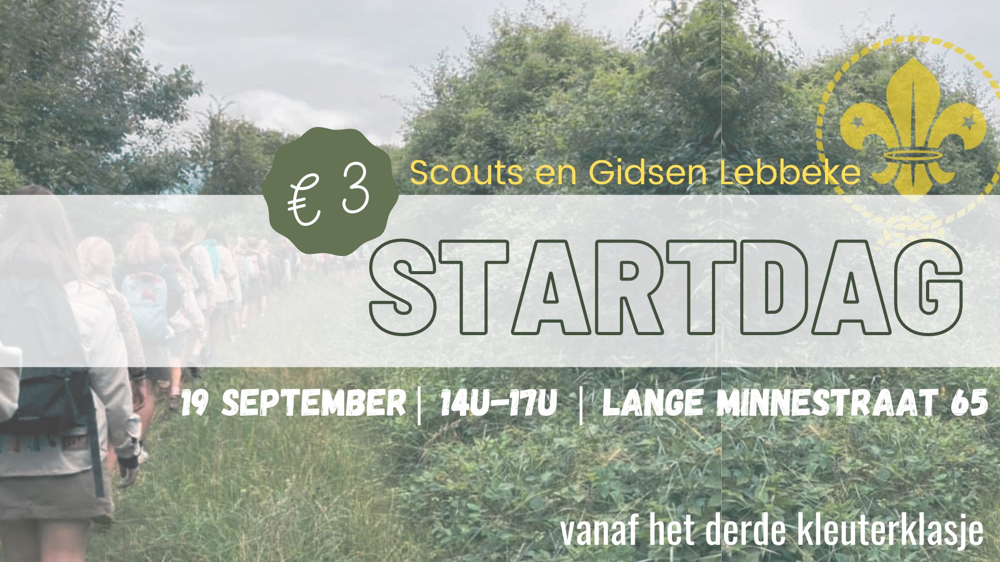
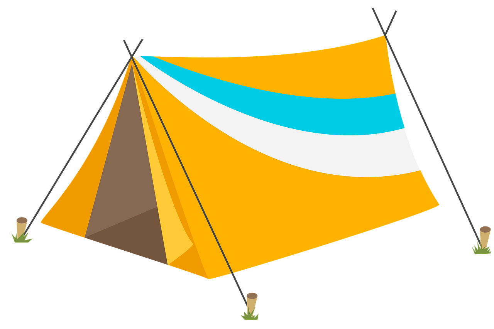

Na een jaar van maatregelen deed het deugd om jullie weer massaal op onze startdag te zien! De leiding kijkt al uit naar volgende zondag!
Na een jaar afwezigheid presenteren we met trots de vijfde editie van de Boskakkerskwis! Op zaterdag 16 oktober kan je een gezellige quizavond komen beleven in de parochiezaal Heilig Kruis! Inschrijven kan hier.
Op zondag 19 september trappen we het nieuwe scoutsjaar af! Alle info kan je hieronder terugvinden.
Alle info omtrent het kamp vind je hier terug!
